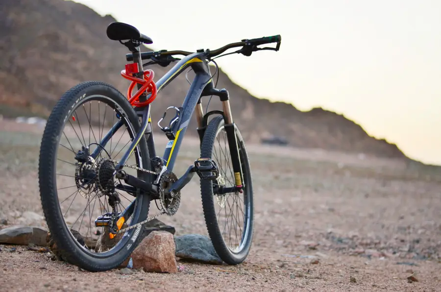

Tune Promise
Seven-day turnaround or the service is free.

Bicycle Shop Owner · Portfolio
Honest tune-ups, city bikes that last, and test rides that end in purchases.
About
Honest tune-ups, city bikes that last, and test rides that end in purchases.
Everything on this page is made to be scrolled slowly. The work below is the honest list — outcomes attached, fluff removed.
Currently
Focus — Mechanics
Also — Bike fitting
Based — Berlin
Selected work
Seven-day turnaround or the service is free.

Forty work bikes maintained for one council.
Sunday social rides, rain or shine, four years.
Custom builds spec'd fit-first.
A repair clinic taught at five schools.
An off-season overhaul menu that stuck.
Services
Honest tune-ups, city bikes that last, and test rides that end in purchases. Mechanics is where this shows up most — ask for examples on a call.
Honest tune-ups, city bikes that last, and test rides that end in purchases. Bike fitting is where this shows up most — ask for examples on a call.
Honest tune-ups, city bikes that last, and test rides that end in purchases. Fleet service is where this shows up most — ask for examples on a call.
Honest tune-ups, city bikes that last, and test rides that end in purchases. Sales is where this shows up most — ask for examples on a call.
Honest tune-ups, city bikes that last, and test rides that end in purchases. Tour leading is where this shows up most — ask for examples on a call.
Honest tune-ups, city bikes that last, and test rides that end in purchases. Inventory is where this shows up most — ask for examples on a call.
Contact
Berlin · replies within a day